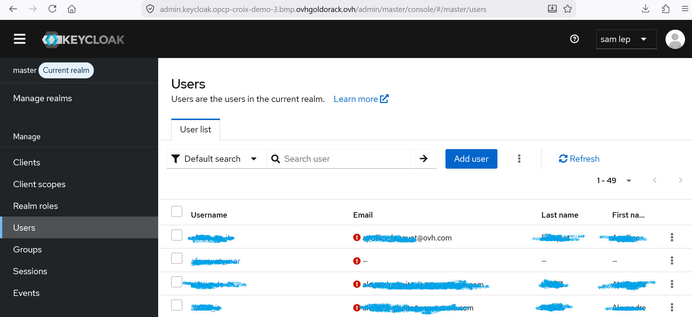
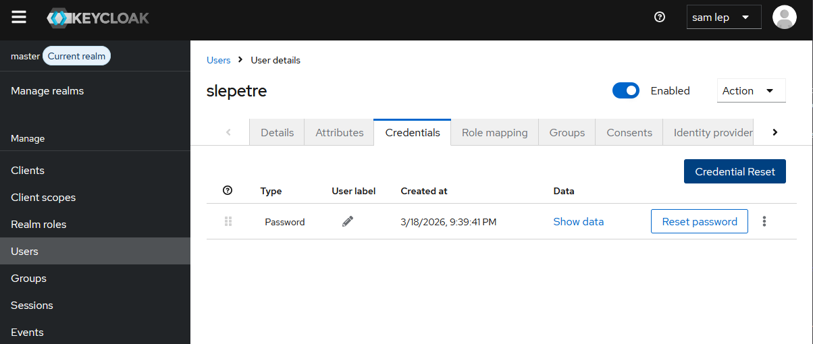
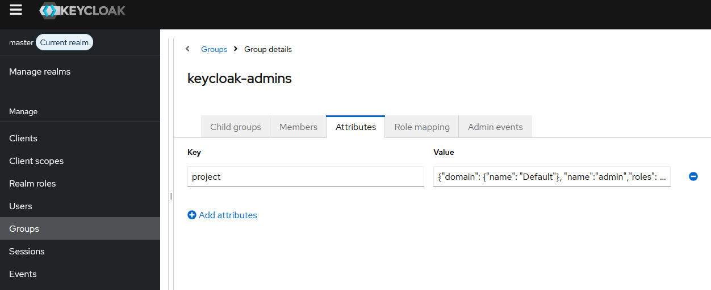

Gestion des utilisateurs
Avant de vous authentifier auprès d'OpenStack, vous avez besoin d'un compte utilisateur. OPCP Core s'appuie sur Keycloak comme fournisseur d'identité. Cette leçon vous guide dans la création d'utilisateurs et l'attribution des rôles et attributs de projet appropriés.
1. Rôles intégrés
Après la toute première installation d'OPCP, un compte super-admin (login / mot de passe) vous est communiqué. Ce compte sert à se connecter à l'interface Keycloak (ou à son API) pour gérer les utilisateurs.
Les realms, rôles et groupes Keycloak sont pré-configurés. La solution OPCP est livrée avec les rôles intégrés suivants :
- Master Admin role — le super-admin pré-configuré livré avec OPCP.
- IT Admin — administre les projets OpenStack et gère les ressources pour les utilisateurs finaux.
- DC Operator — opère la couche d'infrastructure du data-center.
2. Créer un utilisateur dans Keycloak
Connectez-vous à la console d'administration Keycloak avec les identifiants super-admin, puis naviguez vers Users → Add user. Remplissez les champs requis (nom d'utilisateur, email, prénom / nom) et enregistrez.

Définir un mot de passe
Après la création de l'utilisateur, ouvrez l'onglet Credentials et cliquez sur Set Password. Saisissez le mot de passe initial. Activez l'option Temporary si vous souhaitez que l'utilisateur soit invité à réinitialiser son mot de passe à la première connexion.

3. Configurer un utilisateur IT Admin
Lorsque vous devez créer un IT Admin — quelqu'un qui administre les projets OpenStack et gère les ressources pour les utilisateurs finaux — vous devez ajouter un attribut de projet à l'utilisateur.
Ouvrez l'onglet Attributes de l'utilisateur et ajoutez une paire clé-valeur :

- Clé :
project - Valeur : un objet JSON sur une seule ligne (voir ci-dessous)
{"domain": {"name": "Default"}, "name": "admin", "roles": [{"name": "admin"}, {"name": "service"}]}Adaptez les valeurs à votre configuration :
- domain → name — le domaine OpenStack (ex.
Default). - name — le nom du projet OpenStack (ex.
admin). - roles — les rôles OpenStack à accorder (ex.
admin,service).
4. Configurer un utilisateur final
Les utilisateurs finaux ont besoin d'accéder à des projets spécifiques sur OpenStack dans un domaine restreint. Après la création de l'utilisateur, ouvrez l'onglet Attributes et ajoutez une paire clé-valeur :
- Clé :
project - Valeur : un objet JSON sur une seule ligne (voir ci-dessous)
{"domain": {"name": "keycloak"}, "name": "$project", "roles": [{"name": "member"}, {"name": "reader"}]}
Le domaine keycloak est le domaine restreint accessible
aux utilisateurs finaux. Remplacez $project par le nom
réel du projet OpenStack auquel l'utilisateur doit avoir accès.
Résumé
- OPCP est livré avec des realms, rôles et groupes Keycloak pré-configurés.
- Trois rôles intégrés : Master Admin role, IT Admin et DC Operator.
- Les mots de passe sont définis dans l'onglet Credentials ; activez Temporary pour forcer une réinitialisation à la première connexion.
- Les IT Admins reçoivent un attribut
projectsur le domaineDefaultavec les rôlesadmin/service. - Les utilisateurs finaux reçoivent un attribut
projectsur le domainekeycloakavec les rôlesmember/reader.